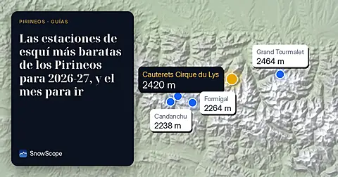

¿Lluvia o nieve en los Pirineos? La cota de nieve sube a 3400 m en Les Angles (18 de noviembre)
En los próximos días la isoterma de 0 °C en los Pirineos debería moverse entre 1900 m y 3670 m, según nuestra previsión. En el momento más templado del día la cota de nieve, unos 300 m más abajo, sube a 3400 m en Les Angles el jueves 19 de noviembre. En la cota de nieve muchas veces se ve: lluvia en el aparcamiento, nieve desde el primer telesilla.
Consulta la previsión de nieve en tiempo real de Boí Taüll en la app SnowScopeEspesor de nieve, alertas de nieve polvo y mapa 3D, gratis.
Cota de nieve, estación por estación
Boí Taüll (base 2039 m, cima 2747 m): el 19 de noviembre la cota de nieve sube a unos 3000 m, más alta que la cima, así que la lluvia o la nieve húmeda llegarían a toda la montaña.
En Ordino-Arcalis (base 1943 m, cima 2626 m) la cota de nieve llega a unos 2900 m el 19 de noviembre, por encima de la cima: si llueve, llueve en todas partes.
Grand Tourmalet (base 1459 m, cima 2464 m): el 18 de noviembre la cota de nieve sube a unos 3000 m, más alta que la cima, así que la lluvia o la nieve húmeda llegarían a toda la montaña.
En Les Angles (base 1635 m, cima 2358 m) la cota de nieve llega a unos 3400 m el 19 de noviembre, por encima de la cima: si llueve, llueve en todas partes.
| Estación | Espesor de nieve | Nieve nueva, 72 h | Previsto, próximos días | Cota máx. |
|---|---|---|---|---|
| Boí Taüll | 0 cm | 2 cm | 5 cm | 2747 m |
| Ordino-Arcalis | 2 cm | 1 cm | 5 cm | 2626 m |
| Grand Tourmalet | 1 cm | 1 cm | 7 cm | 2464 m |
| Les Angles | 11 cm | 0 cm | 3 cm | 2358 m |

¿Lluvia sobre la nieve?
Les Angles tiene unos 11 cm arriba, pero el 18 de noviembre, 19 de noviembre y 21 de noviembre la cota de nieve queda por encima de media montaña: la lluvia vuelve esa nieve pesada y húmeda, y helada cuando se vuelve a congelar.
Baqueira-Beret (2510 m) recibe 20 mm en la previsión; en las horas húmedas la cota de nieve está cerca de 2420 m.
En Saint-Lary (2515 m) esperamos 27 mm de precipitación, y mientras cae la cota de nieve queda hacia 2700 m.
Día a día: la isoterma de 0 °C
La isoterma de 0 °C sobre las estaciones de abajo, de la hora más fría a la más templada de cada día: miércoles 18 de noviembre: de 2800 m a 3520 m. jueves 19 de noviembre: de 1920 m a 3670 m. viernes 20 de noviembre: de 1900 m a 2570 m. sábado 21 de noviembre: de 2350 m a 3150 m.
Por qué la cota de nieve queda más baja que la isoterma de 0 °C
Más arriba suele hacer más frío. Los copos que bajan de la isoterma de 0 °C empiezan a fundirse, pero eso lleva tiempo, así que solo se vuelven lluvia unos 300 m más abajo: esa altura es la cota de nieve. Con aire seco, como en el Atlas, la evaporación enfría los copos y la cota puede bajar todavía más.
Consejos para esquiadores
- El aire templado ablanda la nieve hacia mediodía, así que esquía pronto, arriba y en laderas norte.
- La isoterma de 0 °C es una previsión y puede moverse varios cientos de metros, lo que cambia dónde la lluvia pasa a nieve: vuelve a mirar el mapa el día antes.
- Antes de cualquier salida fuera de pista o de travesía, lee el boletín oficial de aludes (enlaces abajo).
- Nieve en el mapa no significa que la estación esté abierta: consulta remontes y fechas en su web.
Sobre estas cifras
Los espesores de nieve de las estaciones son la nieve más profunda en las pistas altas según el modelo de nieve de SnowScope (unos 1 km, cálculo del 18 de noviembre); son estimaciones para una zona, no una medida en un punto. Los valores de las estaciones de medida son medidas en la fecha indicada. Las previsiones pueden cambiar. Consulta siempre el boletín oficial de aludes antes de salir fuera de pista.
Boletines oficiales de aludes: Météo-France / Meteocat / AEMET
Citar este informe
Para investigación, docencia o prensa: cifras y gráficos reutilizables libremente bajo CC BY 4.0 con esta cita.
SnowScope (2026), ¿Lluvia o nieve en los Pirineos? La cota de nieve sube a 3400 m en Les Angles (18 de noviembre), https://snowscope.app/blog/es/2026/11/pyrenees-freezing-level-snow-line-18-november-2026.html, consultado el 2026-11-18
SnowScope (Atlas Labs). (2026, November 18). ¿Lluvia o nieve en los Pirineos? La cota de nieve sube a 3400 m en Les Angles (18 de noviembre). SnowScope snow reports. https://snowscope.app/blog/es/2026/11/pyrenees-freezing-level-snow-line-18-november-2026.html
BibTeX
@misc{snowscope2026pyreneesfreezinglevelsno,
author = {{SnowScope (Atlas Labs)}},
title = {¿Lluvia o nieve en los Pirineos? La cota de nieve sube a 3400 m en Les Angles (18 de noviembre)},
year = {2026},
month = nov,
howpublished = {\url{https://snowscope.app/blog/es/2026/11/pyrenees-freezing-level-snow-line-18-november-2026.html}},
note = {Published 2026-11-18 12:42 UTC; accessed 2026-11-18}
}· CC BY 4.0 · Métodos, datos y herramientas →
Boí Taüll: nieve y temperatura según la altura, este invierno vs el pasado (herramientas) →
Sigue Boí Taüll
Gratis: un aviso cuando llega la nieve y la previsión cada mañana.
Más partes de nieve

Forfaits de día en los Pirineos desde 46 EUR: seis estaciones de Francia, España y Andorra comparadas por precio, y después por la nieve que suelen tener en diciembre y enero.

Port del Comte, en el Prepirineo de Lleida: espesor de nieve habitual de 46 inviernos pasados en la base, a media montaña y en la cima, mes a mes, por qué la nieve natural es escasa y cómo elegir el día.